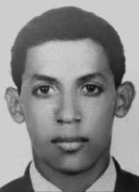

Joel
Vasconcelos
Santos
CIRCUNSTÂNCIAS DA MORTE
No ano de 1971, Joel Vasconcelos Santos manteve os primeiros contatos com Antônio Carlos de Oliveira da Silva, para os dois desenvolverem um trabalho de conscientização política no morro do Borel, na cidade do Rio de Janeiro. Em uma tarde, provavelmente no dia 15 de março, houve um encontro na esquina das ruas São Miguel e Marx Fleuiss, para que Joel entregasse a Antônio Carlos alguns ingressos para a peça de teatro Rei da Vela, quando foram surpreendidos pela polícia. Antônio Carlos e Joel foram conduzidos ao 6º Batalhão da PM e, em seguida, ao quartel da PM na rua Evaristo da Veiga. De lá, foram encaminhados para o quartel da Polícia do Exército, onde, segundo relato de Antônio Carlos, ficaram incomunicáveis e foram submetidos a sessões de tortura. Somente após quatro meses, Antônio Carlos foi liberado, enquanto Joel continuou sob torturas naquele recinto até seu desaparecimento. Antônio Carlos informou que, na última vez que o viu, “ele já não aguentava nem andar. Saia arrastado de uma sala para outra”. Em documentos produzidos pelo DOI do I Exército/RJ, consta que Joel foi interrogado por esse órgão nos dias 15 e 19 de março de 1971. De acordo com documento do DOPS, Joel e Antônio Carlos foram encaminhados ao DOI do I Exército em 17 de março daquele ano. Pesquisas em fichas datiloscópicas e em outros documentos relacionados a pessoas sepultadas como indigentes realizadas, pela CNV, no Instituto Félix Pacheco e no IML, no Rio de Janeiro, propiciaram a realização de Laudo de Perícia Necropapiloscópica, assinado pelo papiloscopista Rosenberg Mathias Barros, em 8 de dezembro de 2014, que identificou as digitais de Joel Vasconcelos Santos como sendo as digitais de um homem que foi recolhido ao IML em 19 de março de 1971, com a guia de número 206 da 4ª DP. A CNV, ao cruzar essa informação com as constantes nos demais Livros do IML-RJ e com o conjunto de laudos necroscópicos microfilmados do IML do Rio de Janeiro, constatou que há dois laudos necroscópicos sobre a morte de Joel, de igual teor, realizados em 20 de março e assinados por João Guilherme de Figueiredo e Hygino de Carvalho Hércules. Estes laudos registram a morte de jovem, não identificado, negro, de 25 anos de idade mais ou menos, com 175 cm de altura, suposta vítima de atropelamento recolhida ao Hospital Souza Aguiar, após morte constatada às 22h do dia 19 de março de março de 1971. A causa da morte afirmada é “contusão do tórax e abdome com fratura de costelas, ruptura do pulmão esquerdo e fígado, hemorragia interna e anemia aguda consequente”. No conjunto localizado ainda é afirmado que o jovem dera entrada no Hospital às 21h27, do dia 19 de março de 1971, como suposta vítima de atropelamento na Praça da República, em frente à Faculdade Nacional de Direito. O seu corpo foi sepultado como indigente em 6 de abril de 1971, no Cemitério Ricardo de Albuquerque. No momento do fechamento de seu Relatório, a CNV prossegue nas investigações sobre morte e desaparecimento de Joel Vasconcelos Santos, com pesquisa nos livros do Cemitério Ricardo de Albuquerque e a análise de toda a documentação levantada. O objetivo é localizar onde seu corpo foi enterrado e, com essa informação, proceder exumação, identificar cientificamente seus restos mortais, confirmar que sua morte ocorreu em decorrência de tortura no DOI do I Exército e apontar os responsáveis pelas graves violações de direitos humanos de que foi vítima.
In 1971, Joel Vasconcelos Santos maintained his first contacts with Antônio Carlos de Oliveira da Silva, so that the two could develop political awareness work on Morro do Borel, in the city of Rio de Janeiro. One afternoon, probably on March 15th, there was a meeting on the corner of São Miguel and Marx Fleuiss streets, so that Joel could give Antônio Carlos some tickets for the play Rei da Vela, when they were surprised by the police. Antônio Carlos and Joel were taken to the 6th PM Battalion and then to the PM barracks on Rua Evaristo da Veiga. From there, they were taken to the Army Police barracks, where, according to Antônio Carlos' report, they were held incommunicado and subjected to torture sessions. Only after four months, Antônio Carlos was released, while Joel continued to be tortured in that room until his disappearance. Antônio Carlos reported that, the last time he saw him, "he could no longer even walk. He was dragged from one room to another." In documents produced by the DOI of the 1st Army/RJ, it is stated that Joel was interrogated by that body on March 15 and 19, 1971. According to the DOPS document, Joel and Antônio Carlos were sent to the DOI of the 1st Army on March 17 of that year. Research on fingerprint records and other documents related to people buried as indigents carried out by the CNV at the Félix Pacheco Institute and the IML, in Rio de Janeiro, led to the creation of a Necropapiloscopy Expert Report, signed by papilloscopist Rosenberg Mathias Barros, on December 8, 2014, which identified the fingerprints of Joel Vasconcelos Santos as being the fingerprints of a man who was collected from the IML on March 19, 1971, with guide number 206 of the 4th DP. The CNV, when cross-referencing this information with that contained in other IML-RJ Books and with the set of microfilmed necroscopic reports from the IML of Rio de Janeiro, found that there are two necroscopic reports on Joel's death, of the same content, carried out on March 20 and signed by João Guilherme de Figueiredo and Hygino de Carvalho Hércules. These reports record the death of a young, unidentified, black man, 25 years of age or less, 175 cm tall, alleged victim of being run over by a car, taken to Hospital Souza Aguiar, after death was confirmed at 10pm on March 19, 1971. The stated cause of death is “contusion of the chest and abdomen with fractured ribs, rupture of the left lung and liver, internal bleeding and acute anemia consequent.” In the group located, it is still stated that the young man was admitted to the Hospital at 9:27 pm, on March 19, 1971, as an alleged victim of being run over in Praça da República, in front of the National Faculty of Law. His body was buried as a pauper on April 6, 1971, in the Ricardo de Albuquerque Cemetery. At the time of closing its Report, the CNV continues its investigations into the death and disappearance of Joel Vasconcelos Santos, with research in the books of the Ricardo de Albuquerque Cemetery and the analysis of all the documentation collected. The objective is to locate where his body was buried and, with this information, carry out exhumation, scientifically identify his remains, confirm that his death occurred as a result of torture in the DOI of the 1st Army and identify those responsible for the serious human rights violations of which he was a victim.
En 1971, Joel Vasconcelos Santos mantuvo sus primeros contactos con Antônio Carlos de Oliveira da Silva, para que ambos desarrollaran una labor de sensibilización política en el Morro do Borel, en la ciudad de Río de Janeiro. Una tarde, probablemente del 15 de marzo, hubo una reunión en la esquina de las calles São Miguel y Marx Fleuiss, para que Joel le regalara entradas a Antônio Carlos para la obra Rei da Vela, cuando fueron sorprendidos por la policía. Antônio Carlos y Joel fueron llevados al 6.º Batallón PM y luego al cuartel PM en la Rua Evaristo da Veiga. De allí fueron trasladados al cuartel de la Policía Militar, donde, según el relato de Antônio Carlos, fueron recluidos en régimen de incomunicación y sometidos a sesiones de tortura. Sólo después de cuatro meses, Antônio Carlos fue liberado, mientras Joel continuó siendo torturado en esa habitación hasta su desaparición. Antônio Carlos relató que, la última vez que lo vio, "ya no podía ni caminar. Lo arrastraban de una habitación a otra". En documentos producidos por el DOI del 1.º Ejército/RJ, se afirma que Joel fue interrogado por ese organismo los días 15 y 19 de marzo de 1971. Según el documento del DOPS, Joel y Antônio Carlos fueron enviados al DOI del 1.º Ejército el 17 de marzo de ese año. Las investigaciones sobre registros dactiloscópicos y otros documentos relacionados con personas enterradas como indigentes realizadas por la CNV en el Instituto Félix Pacheco y el IML, en Río de Janeiro, llevaron a la elaboración de un Informe Pericial de Necropapiloscopia, firmado por el papiloscopista Rosenberg Mathias Barros, el 8 de diciembre de 2014, que identificó las huellas dactilares de Joel Vasconcelos Santos como huellas de un hombre que fueron recogidas en el IML el 19 de marzo de 2014. 1971, con guía número 206 del 4º DP. La CNV, al cruzar esta información con la contenida en otros Libros del IML-RJ y con el conjunto de informes necroscópicos microfilmados del IML de Río de Janeiro, constató que existen dos informes necroscópicos sobre la muerte de Joel, del mismo contenido, realizados el 20 de marzo y firmados por João Guilherme de Figueiredo e Hygino de Carvalho Hércules. Estos informes registran la muerte de un joven negro, no identificado, de 25 años de edad o menos, 175 cm de altura, presunta víctima de atropello por un automóvil, trasladado al Hospital Souza Aguiar, luego de que se confirmara su muerte a las 22 horas del 19 de marzo de 1971. La causa de muerte declarada es “contusión de tórax y abdomen con fractura de costillas, rotura de pulmón izquierdo e hígado, hemorragia interna y consiguiente anemia aguda”. En el grupo localizado aún se constata que el joven ingresó en el Hospital a las 21:27 horas del 19 de marzo de 1971, como presunta víctima de un atropello en la Plaza de la República, frente a la Facultad Nacional de Derecho. Su cuerpo fue enterrado como indigente el 6 de abril de 1971, en el Cementerio Ricardo de Albuquerque. Al momento de cerrar su Informe, la CNV continúa sus investigaciones sobre la muerte y desaparición de Joel Vasconcelos Santos, con la investigación en los libros del Cementerio Ricardo de Albuquerque y el análisis de toda la documentación recabada. El objetivo es localizar dónde fue enterrado su cuerpo y, con esa información, realizar la exhumación, identificar científicamente sus restos, confirmar que su muerte se produjo como consecuencia de torturas en el DOI del 1.º Ejército e identificar a los responsables de las graves violaciones a los derechos humanos de las que fue víctima.